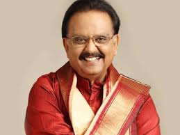
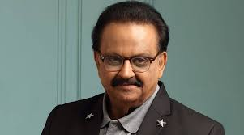
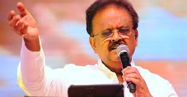
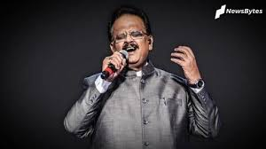
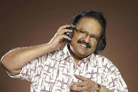
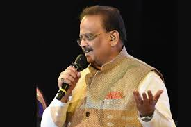
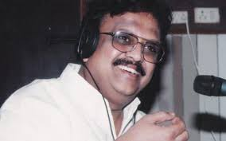
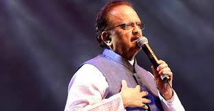
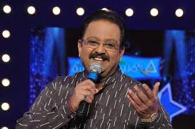

S.P.BALASUBRAHMANYAM
(1946 - 2020)
Sripathi Panditaradhyula Balasubrahmanyam (4 June 1946 – 25 September 2020), also referred to as S. P. B. or Balu, was an Indian musician, playback singer, television anchor, music director, actor, dubbing artist, and film producer who worked predominantly in Telugu, Tamil, Kannada, Hindi, and Malayalam films.
S. P. Balasubrahmanyam was born in Nellore, Madras Presidency (present-day Andhra Pradesh) into a Telugu family. His father, S. P. Sambamurthy, was a Harikatha artist who also acted in plays. His mother was Sakunthalamma, who died on 4 February 2019. He had two brothers and five sisters, including singer S. P. Sailaja. His son S. P. Charan is also a popular South Indian singer, actor and producer.Balasubrahmanyam developed an interest in music at an early age, studied musical notations, and learned music. He enrolled at the JNTU College of Engineering Anantapur with the intention of becoming an engineer. He discontinued his studies early due to typhoid and joined as an associate member the Institution of Engineers, Chennai. Balasubrahmanyam continued to pursue music during his engineering studies and won awards at singing competitions. In 1964, he won the first prize in a music competition for amateur singers organized by the Madras-based Telugu Cultural Organization. He was the leader of a light music troupe composed of Anirutta (on the harmonium), Ilaiyaraaja (on guitar and later on harmonium), Baskar (on percussion) and Gangai Amaran (on guitar). He was selected as the best singer in a singing competition which was judged by S. P. Kodandapani and Ghantasala. Often visiting music composers seeking opportunities, his first audition song was "Nilave Ennidam Nerungadhe". It was rendered by veteran playback singer P. B. Srinivas, who used to write and give him multi-lingual verses in Telugu, Tamil, Hindi, Kannada, Malayalam, Sanskrit, English and Urdu.
Balasubrahmanyam made his debut as a playback singer on 15 December 1966 with Sri Sri Sri Maryada Ramanna, a Telugu film scored by his mentor, S. P. Kodandapani. The first non-Telugu song that he recorded just eight days after his debut Telugu song was in Kannada in 1966 for the film Nakkare Ade Swarga, starring Kannada comedy stalwart T. R. Narasimharaju. He recorded his first Tamil song "Athaanodu Ippadi Irundhu Eththanai Naalaachu", a duet with L. R. Eswari under the musical direction of M. S. Viswanathan for the film Hotel Ramba, which was never released. Other early songs he sang were duets with P. Susheela, "Iyarkai Ennum Ilaya Kanni" in the 1969 film Shanti Nilayam, starring Gemini Ganesh, and "Aayiram Nilavae Vaa" for M. G. Ramachandran in Adimaippenn. His first song with S. Janaki was "Pournami Nilavil Pani Vizhum Iravil" in Kannippenn. He was then introduced to the Malayalam film industry by G. Devarajan in the film Kadalppalam.
Balasubrahmanyam was married to Savithri and has two children, a daughter Pallavi, and a son S. P. B. Charan, also a playback singer and film producer.
On 5 August 2020, Balasubrahmanyam tested positive for COVID-19 and was admitted to MGM Healthcare in Chennai. Subsequently, his health deteriorated and he was shifted to the intensive care unit in a critical state. He required a ventilator and extracorporeal membrane oxygenation (ECMO) support. His son Charan provided periodic updates over social media, while members of the Tamil film industry engaged in a mass prayer via Zoom on 20 August and candlelight vigils were held by fans outside the hospital. On 7 September 2020, Balasubrahmanyam tested negative for the coronavirus, although he remained using a ventilator and ECMO. He started showing signs of recovery, including light speech and physical activities. However, the hospital released a statement on 24 September stating that he became "extremely critical" and was on "maximal life support".He died on 25 September 2020 at 1:04 pm (IST) of cardio-respiratory arrest after over a month-long hospitalisation. He was buried at his farm house in Tamaraipakam, Thiruvallur district with state honours on 26 September 2020.
Awards
S. P. Balasubrahmanyam has won 12 awards - Filmfare Award in 1990, Filmfare Award - Telugu in 2007, Filmfare Award - Tamil in 2008, Filmfare Award - Kannada in 2011, National Award in 1996, National Award in 1995, National Award in 1988, National Award in 1983, National Award in 1981, National Award in 1979, Filmfare Award South in 1987 and Filmfare Award South in 1984.
Civilian honours:
2001 Padma Shri
2011 Padma Bhushan
Other honours:
1981 Kalaimaamani
1999 Honorary Doctorate
2008 Karnataka Rajyothsava Award
2009 Honorary Doctorate
2009 Kalaprapoorna (Honorary doctorate)
2010 Honorary Doctorate
2017 Kala Pradarshini Ghantasala Puraskar
National Film Awards:
1979 Sankarabharanam "Omkaara Nadhaanu"
1981 Ek Duuje Ke Liye "Tere Mere Beech Mein"
1983 Saagara Sangamam "Vedam Anuvanuvuna"
1988 Rudraveena "Cheppaalani Undi"
1995 Sangeetha Sagara Ganayogi Panchakshara Gavai
Filmfare Awards:
1981 Ek Duuje Ke Liye "Tere Mere Beech Mein"
1989 Maine Pyar Kiya "Dil Deewana"
1991 Saajan "Tumse Milne Ki Tamanna Hai"
1994 Hum Aapke Hain Koun..! "Hum Aapke Hain Koun"
Filmfare Awards South:
1983 Filmfare Lifetime Achievement Award – South
1986 Outstanding Achievement As a Playback Singer
1991 Best Film Yerra Mandaram — Telugu
1995 Best Film Subha Sankalpam — Telugu
2005 Best Male Playback Singer Nuvvostanante Nenoddantana "Ghal Ghal Ghal Ghal"
2006 Best Male Playback Singer Sri Ramadasu "Adigadigo Bhadragiri"
2007 Best Male Playback Singer Mozhi "Kannal Pesum Penne" Tamil
2008 Best Male Playback Singer Panduranga "Matrudevobhava" Telugu
2009 Best Male Playback Singer Mahatma "Indiramma" Telugu
2010 Best Male Playback Singer Aaptha Rakshaka "Gharane Ghara Gharane"
2011 Best Male Playback Singer 7aum Arivu
South Indian International Movie Awards:
2013 SIIMA Award for Best Playback Singer (Male) Sri Rama Rajyam Jagadananda Karaka Telugu
2017 SIIMA Lifetime Achievement Award) Various films Various songs Various languages
Nandi Awards:
In 2012, he received the NTR National Award for his contributions to Indian cinema
2012 Mithunam Special Jury Award
2009 Mahatma Best Male Playback Singer
2005 Pellam Pichodu Best Male Playback Singer
2003 Seetayya Best Male Playback Singer
2002 Vasu Best Male Playback Singer
2000 Raghavayyagari Abbai Best Male Playback Singer
2000 Sri Sai Mahima Best Dubbing Artist
1997 Annamayya Best Dubbing Artist
1997 Priyaragalu Best Male Playback Singer
1996 Pavithra Bandham Best Supporting Actor
1994 Bhairava Dweepam Best Male Playback Singer
1993 Mister Pellam Best Male Playback Singer
1992 Bangaaru Mama Best Male Playback Singer
1991 Chanti Best Male Playback Singer
1989 Neerajanam Best Male Playback Singer
1989 Neerajanam Best Male Playback Singer
1989 Prema Special Jury Award
1986 Sirivennela Best Male Playback Singer
1985 Mayuri Best Music Director
1984 Suvarna Sundari Best Male Playback Singer
1983 Bahudoorapu Baatasaari Best Male Playback Singer
1981 Premabhishekam Best Male Playback Singer
1979 Sankarabharanam Best Male Playback Singer
1978 Naalaga Endaro Best Male Playback Singer
Tamil Nadu State Film Awards:
1969 Adimaippen, Shanti Nilayam Best Singer
1980 Nizhalgal Best Singer
1990 Keladi Kanmani Best Singer
1994 Jai Hind Best Singer
Karnataka State Film Awards:
1997-98 O Mallige Best Male Playback singer
2004-05 Srushti Best Male Playback Singer
2007-08 Savi Savi Nenapu Best Male Playback Singer
Gallery
        